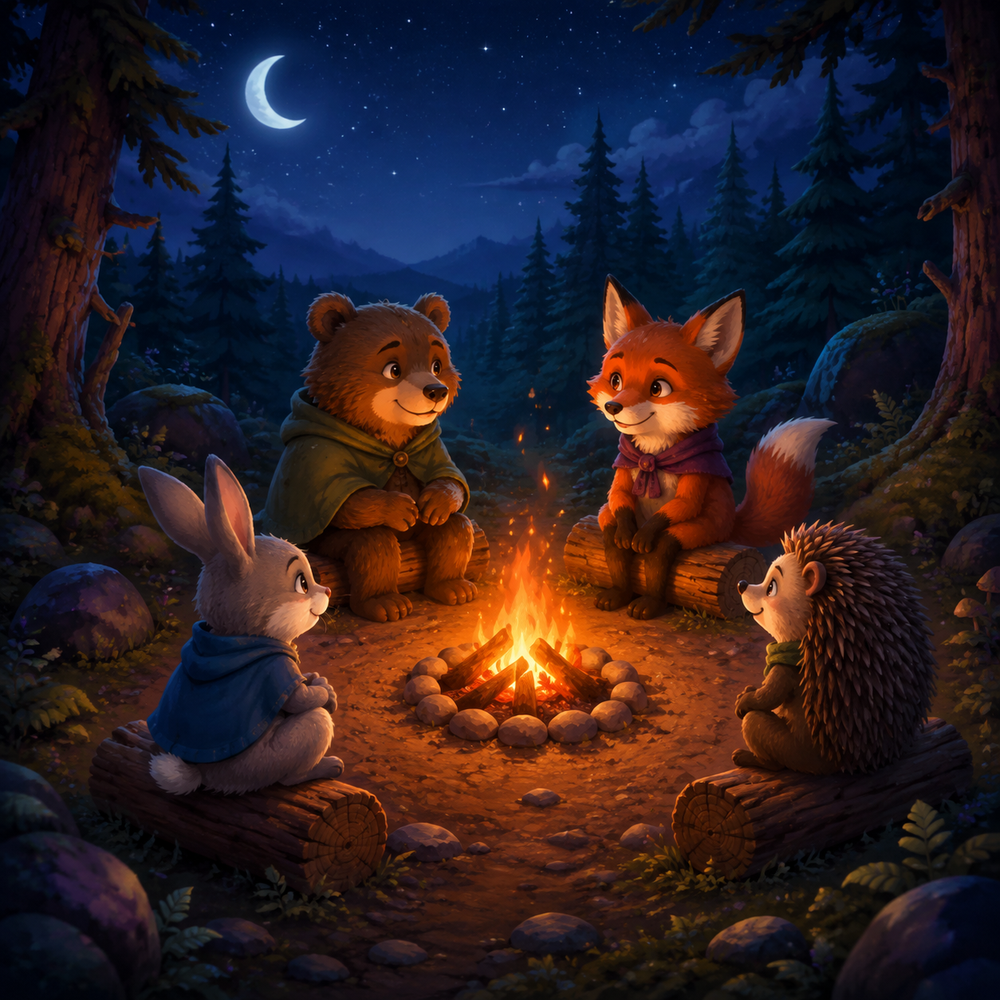

Read the animals' comfort notes, then choose the one circular seat order that keeps the campfire cozy.
Warming the campfire…

Read the animals' comfort notes, then choose the one circular seat order that keeps the campfire cozy.
Start by reading both comfort notes for the current circle. Each note describes a relationship, a preferred neighbour, or a direction that matters around the fire. Treat the words as the puzzle rules, not as decoration. Notice who is named, whether the clue says beside or opposite, and whether a phrase such as left, away, or between fixes the direction. You do not need to remember anything from an earlier circle: every round gives you a fresh, self-contained set of clues.
Three circle cards show three complete seat orders. A circular order wraps around, so the first and last names are neighbours too. Compare each card with every clue before checking it. For a beside clue, look at the two seats touching that animal. For an opposite clue, count two seats across the four-seat circle. For a between clue, check the two neighbours on both sides of the named animal. A card can look almost right while still breaking one small relationship, so read the full order instead of judging by the first pair you recognize. The animals are Orla, Moss, Taro, and Pip, and their positions rotate from round to round.
Select a card by tapping or clicking anywhere on it. The selected card gets a clear highlight, the selection message names its position, and the Check the camp button becomes available. If your choice is not the solution, the camp remains safe: the round does not advance, the clues stay visible, and you can choose another card. A wrong check is useful feedback rather than a penalty. Read the notes again, compare the neighbours, and try a different order. Use Reset choice when you want to remove the highlight and reconsider the round from the beginning. Your checks are counted for the result, so careful reading helps you make a cleaner run.
Choose an unlocked circle from Stages. Solving it opens the result with a clear next-step choice; the next circle unlocks only after the current one is solved. There is no timer, so take time to compare the clues and all three seat orders.
Solved circles stay available for replay, while the newest unlocked circle is centered when you return to Stages. Your completed circles and best checks per circle are saved in this browser. Back to start returns to Main; no account or purchase is required.
How long is a session? The full campaign contains 30 quick circles with no timer, so you can solve them at your own pace. What happens after a miss? Nothing is lost; the same circle stays open so you can reread the clues, reset the card, and try again. Does the puzzle need a special device? No. The cards and buttons are designed for touch, mouse, and keyboard use, with large action targets and a responsive layout for portrait and landscape screens. Do the choices move? Yes. Each logic family keeps a valid solution while answer cards reshuffle at the start of a camp. Can I change sound or language? Open the shared Settings control on Main or Result, choose a language, and use the Sound switch as needed. Why are there no ads in the play area? This internal General prototype reserves the governed space without placing an ad over the puzzle. The important habit is simple: read the current notes, test one complete circle, learn from a miss, and keep the camp comfortable.
Choose a card below to compare seats.
Choose one circle, then check it.
CIRCLE COMPLETE